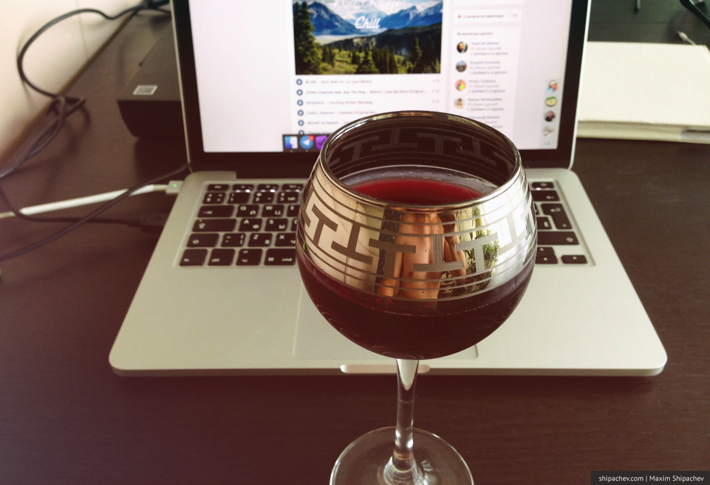

Меня хлебом не корми, дай поломать немного привычный ход вещей, и попробовать новое. Но проблема в том, что с парашютом прыгать страшно, татуировку бить рано, а желания гомосексуального опыта нет.
Директор Московского научно-практического центра наркологии Евгений Брюс: «Сейчас взрослый человек потребляет в среднем в год 12,8 литров абсолютного алкоголя (этилового спирта)
Многие из вас, по тем или иным причинам, пьют вечерами. Строго говоря, причина, если вы находитесь в Кемерове, одна — скука. Кто-то обязательно берёт «сиську» светлого, чтобы высосать вместо ужина, кто-то «с устатку» опрокидывает 50 грамм водки, крякая и закусывая жареной картошкой, кто-то представляя, что он лучше всех, трогает себя за смартфон на диване за бокалом вина.
Смысл один — пьют почти все.
Чрезмерное употребление алкоголя вредит вашему здоровью
Вечерами пить банально и скучно, я решил поступить асимметрично: пить вино на протяжении недели с утра и прислушиваться к своим ощущениям. Так родился проект «Винеция». В проекте меня не бросила, как не бросила до сих пор, моя верная Наташа. Теперь об ощущениях и выводах.

Минусы употребления вина с утра
1. Зависть окружающих. В нашей культуре не принято соблюдать разумную норму употребления спиртного, или она неадекватно завышена. Поэтому, когда говорят о том, что кто-то пришёл на работу выпивши, рисуется однозначная картина: ужравшийся токарь с бутылкой водки в кармане, запоровший резец. Перед работой в России выпивать не принято. Многие умом понимают, что могли бы, но работа в холдинге дороже.
2. Никакого автомобиля. Тут, думаю, всё ясно. Хотя, уверен, 100 грамм вина вряд ли вреднее разговора по сотовому в машине, но табу есть табу. С погодой повезло, на работу ездили на велосипеде. Тот, кто хочет сказать, что на велосипеде тоже нельзя, пусть всю жизнь переходит дорогу только по пешеходному переходу.
Плюсы употребления вина с утра
1. Настроение складывается в начале дня. И это не та поддельная жизнерадостность, которая, перемежаясь с сообщениями о дорожной ситуации, струится из утреннего радиоэфира. Это обычное человеческое умиротворение.
2. Эффект замедления времени. Употребление любых доз алкоголя запускает активность ингибиторных гамма-аминомасляных кислот. Это процесс приводит к седативному эффекту, который, в частности, выражается в снижении кратковременной памяти. Следствием этого и является эффект замедления времени. К обеду мельчайшие детали утра начинают забываться и кажется, что уже прошёл целый день. Нужно отметить, что это значимо не сказывается на продуктивности, если вы не пилот Формулы 1 или космонавт. Условно говоря, вы немного забываете, что устаёте, и вас не тревожит рутина. КПД вырастает.
3. Алкоголь является частью здоровой диеты. Сложно пить вино, заедая его печеньем или тортом. Волей-неволей вам придётся завтракать полноценно.
4. Алкоголь предупреждает стресс. Употребление небольшого количества алкоголя с утра можно сравнить с надеванием каски при посещении стройки. Если человек пьёт вечерами, то он просто бинтует голову, на которую весь день падал кирпич.
5. Алкоголь помогает бороться с лишним весом. Тут нужно сделать поправку на то, что причины лишнего веса могут быть разными, но я говорю об одной из самых распространённых. Под влиянием стресса, страха или утомления кора надпочечников в организме человека вырабатывает катаболический гормон кортизол. Кортизол разрушает в организме белки (мышцы) до аминокислот, а гликоген (основной аккумулятор энергии) до глюкозы. Следствием этих процессов являются жир на животе и бёдрах, прыщи, истощение мышц. Организм в этом смысле действует достаточно грамотно, пытаясь сохранить себя. Предупреждая стресс, страх или утомление мы предупреждаем и процессы связанных с повышенной секрецией кортизола.
6. Если пить по утрам, пьёшь меньше. Многие знают, что вовремя остановиться вечером достаточно сложно. Как правило всё заканчивается тем, что пора спать, потому что вино или пиво уже кончилось. Грустная картина, и в магазинах уже не продают. Выпить бутылку с утра, напротив, достаточно странно. За неделю мы на двоих не допили даже двух бутылок. А вечером в бутылке уже не будет никакой нужды. Потому что день прошёл хорошо, и мы счастливы!